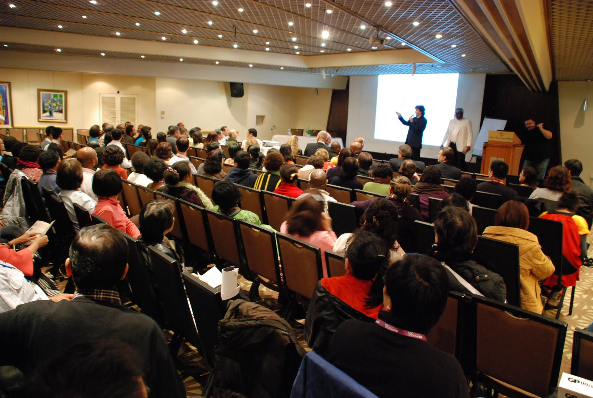

<style>
	.page_wise_banner {
		background-image: url('assets/img/banner/bg-3.jpg');
		background-position: center center;
	}

</style>

<!--  SERVICE AREA START  -->
<section class="section-padding">
	<div class="container">
		<div class="row align-items-center">
			<div class="col-lg-12 col-sm-12 col-md-12 mb-4">
				<h3 class="mb-3">Call For Papers</h3>
				<p class="mb-4">
					Authors are invited to submit original research papers for presentation in the following topics, but
					are not limited to:
				</p>

				<!-- <ul class="about-list2 my-4">
					{% for topic in site.data.papers.topics %}
					<li class="mb-2">
						<i class="icofont icofont-check-circled"></i>
						{{ topic }}
					</li>
					{% endfor %}
				</ul> -->

				<div class="row">
					{% for data in site.data.papers %}
					<div class="col-lg-6 col-sm-12 col-md-6">
						<div class="intro-box">
							<h4>{{ data.name }}</h4>
							<ul class="about-list2 my-4">
								{% for name in data.people %}
								<li class="mb-2">
									<i class="icofont icofont-check-circled"></i>
									{{ name }}
								</li>
								{% endfor %}
							</ul>
						</div>
					</div>
					{% endfor %}
				</div>

			</div>

			<div class="col-sm-12 d-md-none">
				
			</div>
		</div>

		<div class="row align-items-center">
			<div class="col-lg-12 col-sm-12 col-md-12 mb-4">
				<h3 class="mb-3">Format</h3>
				<p class="mb-4">
					Workshop contributions should be either full papers (<b>9,000 words</b>, excluding references) or short papers (<b>5,000 words</b>,  excluding references) in the ACM single column format.<br />
					You can find the template at the following link <a href="https://www.acm.org/publications/proceedings-template"> LateX</a> / <a href="https://www.overleaf.com/latex/templates/association-for-computing-machinery-acm-large-1-column-format-template/fsyrjmfzcwyy"> Overleaf</a> / <a href="https://www.overleaf.com/latex/templates/association-for-computing-machinery-acm-large-1-column-format-template/fsyrjmfzcwyy"> Word</a>.
				</p>
			</div>
		</div>

		<div class="row align-items-center">
			<div class="col-lg-12 col-sm-12 col-md-12 mb-4">
				<h3 class="mb-3">Submit Your Manuscript</h3>
				<p class="mb-4">
					All proposed papers must be submitted in electronic form (PDF format) via <a href="https://easychair.org/conferences/?conf=ncai2020">EasyChair</a>.
				</p>
			</div>
		</div>

		<div class="row align-items-center">
			<div class="col-lg-12 col-sm-12 col-md-12 mb-4">
				<h3 class="mb-3">Important dates</h3>
				<p class="mb-4">
					<b>Paper submission deadline</b> June 23rd, 2023 <br />
					<b>Papers notification of acceptance</b> July 14th, 2023 <br />
					<b>Camera-ready papers</b> July 19th, 2023 <br />
					<b>Workshop celebration</b> September 20th, 2023 <br />
				</p>
				
			</div>
		</div>


		<div class="row align-items-center">
			<div class="col-lg-12 col-sm-12 col-md-12 mb-4">
				<h3 class="mb-3">Publication</h3>
				<p class="mb-4">
					S³C welcomes the submission of application papers with preference to the topics listed in the call for papers. All submitted papers will undergo a thorough review process; each paper will be reviewed, anonymously by at least two reviewers of the Program Committee. Acceptance as regular papers will depend upon scientific value and relevance to the Workshop theme. <br />
					Accepted papers will be published open access on <b>CEUR-WS</b> proceedings.
					Please, remember that for the accepted version of your paper you must fill out and sign the Consent to Publish and send it back.
					At least one of the authors will be required to register and attend CHItaly 2023 to present the paper in order to have it included in the workshop proceedings.


				</p>
			</div>
		</div>
	</div>
</section>
<!--  ABOUT AREA END  -->
